클라이언트 프로그래머
게임 개발 · 5년차
"만드는 것에서 끝나지 않고, 더 나은 구조와 성능을 고민합니다."
한·일 앱마켓 1위 타이틀의 초기 개발부터 라이브 서비스까지 경험한
Unity 클라이언트 프로그래머입니다.
전투 시스템, 렌더링 최적화, 에디터 툴 개발을 주도했습니다.
| hhj3258@gmail.com | ||
| GitHub | github.com/hhj3258 | |
| 경력 | 5년차 (2022.07 ~) |
AI 세션을 노드, 작업이 넘어가는 경로를 엣지로 보고 흐름을 설계했습니다. 구현을 맡은 세션은 스스로 완료 처리를 할 수 없습니다.
INDEX.md전체 스펙 목록과 상태. PD·QA만 수정
spec.md목적, 수용 기준, 설계 결정, 버린 안
PROGRESS.md진행 상태와 다음 할 일
qa.md착수 전 검토와 검증 리포트
AI 코딩 에이전트에 구현을 맡기니 속도는 빨라졌지만, 같은 세션이 구현과 검증을 함께 하면 자기가 만든 흐름대로만 테스트했습니다. 기준은 모두 통과했다는데 실제로 게임을 켜 보면 깨져 있는 일이 반복됐습니다.
AI가 틀릴 수 있다고 전제하고
검증 단계를 따로 두는 것이
프롬프트를 다듬는 것보다 중요했습니다.
작업을 시작하기 전에 수용 기준을 적은 spec.md부터 만들고, 설계가 바뀌면 문서를 먼저 고치도록 팀 규칙으로 정했습니다. 커밋할 때마다 스펙과 진행 문서가 서로 맞는지 훅이 자동으로 검사합니다.
작업 전에는 QA 세션이 수용 기준을 먼저 검토하고, 작업 후에는 구현에 참여하지 않은 QA 세션만 완료를 판정합니다. QA 세션은 Unity MCP로 게임을 직접 조작해 수치와 스크린샷으로 확인하고, 확인 과정은 다시 쓸 수 있는 테스트 코드로 남깁니다.
총괄(PD) 세션이 여러 워커 세션에 작업을 나눠 주고 결과를 병합하는 스크립트를 만들었습니다. 사전 검토를 거치지 않은 작업은 배분되지 않습니다.
규칙 원본을 특정 AI 도구에 묶이지 않는 파일로 두고 Claude Code와 Cursor 설정에 연결했습니다. 팀원 누구나 저장소만 받으면 같은 방식으로 작업할 수 있습니다.
팀 저장소에 10여 개를 올려 함께 쓰고 있고, 그중 6개를 소개합니다.
스펙의 수용 기준을 테스트 항목으로 먼저 정리하고, 게임을 실행해 확인한 뒤 통과·실패 리포트를 남깁니다.
Unity MCP로 게임을 조작해 수치와 스크린샷으로 확인하고, 확인 과정을 다시 쓸 수 있는 테스트 코드로 저장합니다.
사내 빌드 서버에 빌드를 요청하고, 끝나면 성공 여부를 확인해 변경 내역과 함께 팀 채널에 올립니다.
기획 데이터 시트를 수정해 새 버전으로 배포하고, Unity에 받아 제대로 반영됐는지 비교합니다.
Figma로 화면을 그리거나 받은 시안을 Unity UI 프리팹으로 옮기고 검수합니다.
에러 알림이 오면 콜스택을 따라 코드를 추적해 원인·결과·대응을 정리한 답글 초안을 쓰고, 확인을 받은 뒤 올립니다.
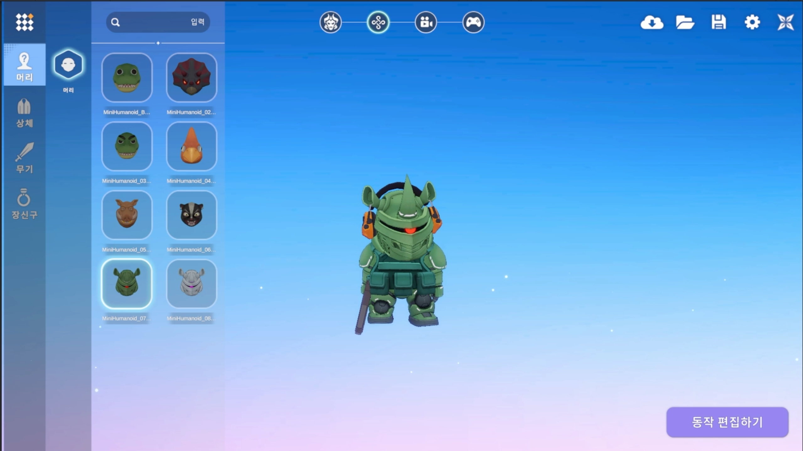
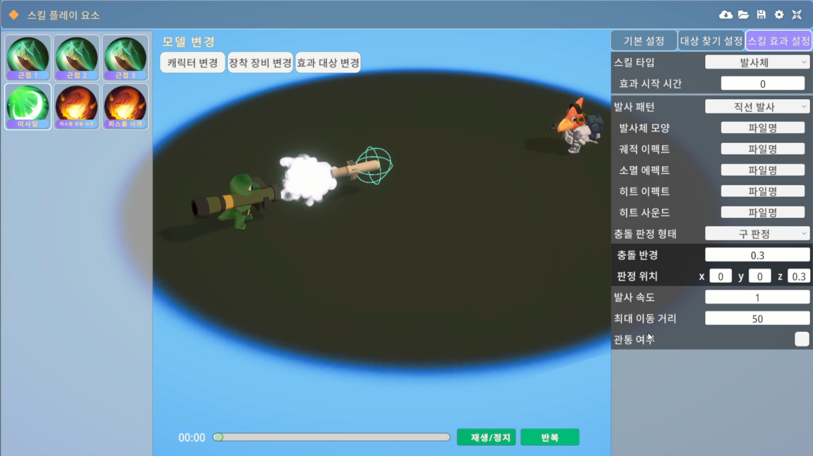
모바일/PC UGC 샌드박스 게임
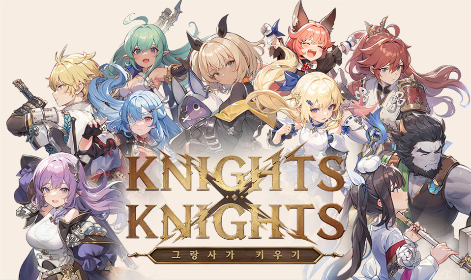
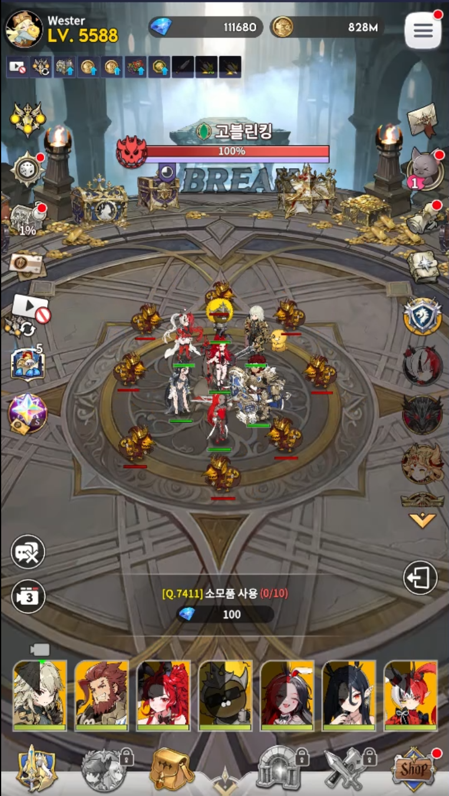
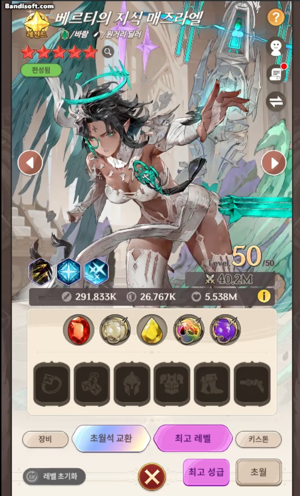
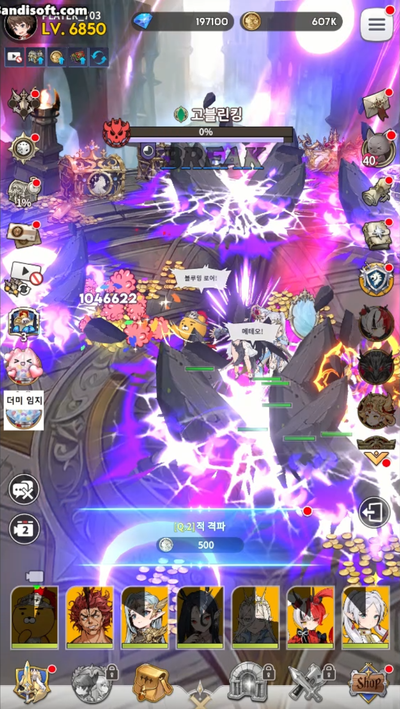
모바일 방치형 RPG · Unity · 약 40명 규모
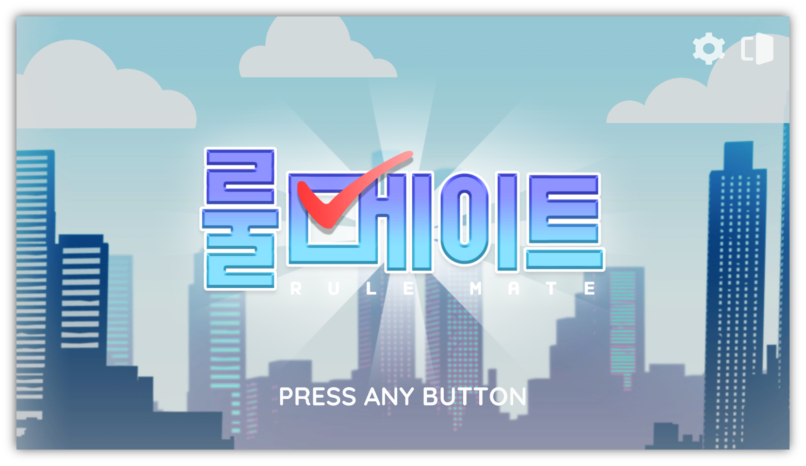
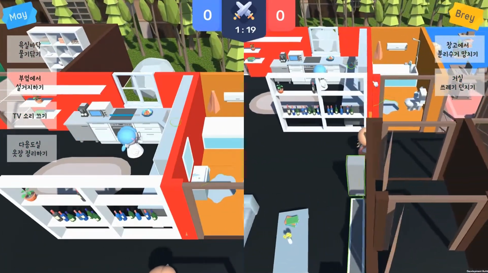
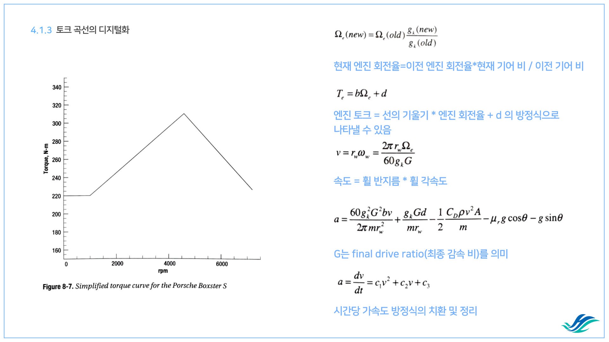
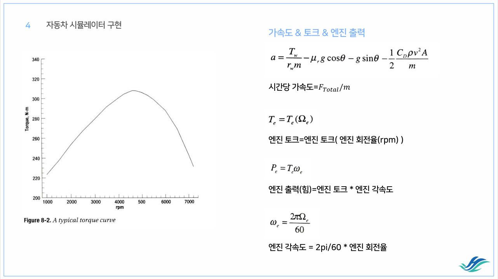
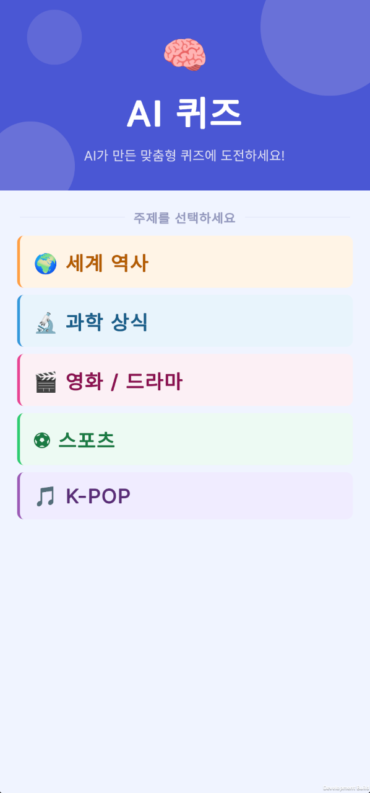
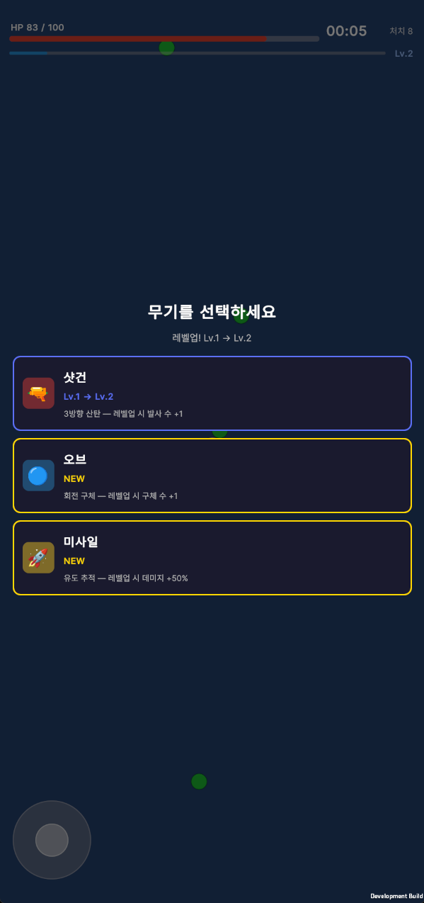
모바일 · 미니게임
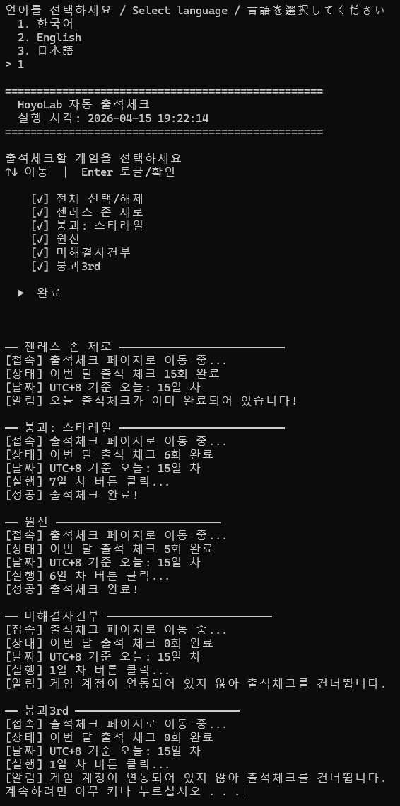
호요버스 웹 출석체크 자동화